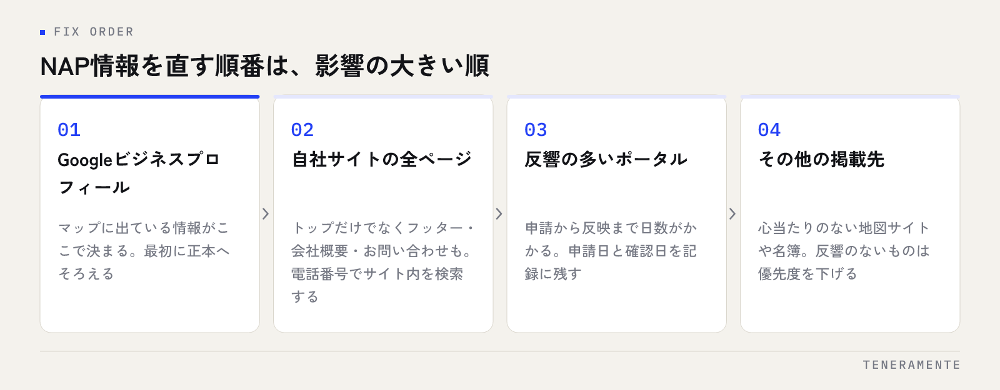

Googleマップに出ている電話番号と、自社サイトに書いてある番号が違う。ポータルサイトには昔の住所が残っている。こうした掲載先ごとのばらつきを揃える作業が、NAP情報の統一です。派手な施策ではありませんが、MEO対策の土台にあたる部分で、ここが崩れていると他の施策が効きにくくなります。
📌 この記事の結論
NAP情報の統一とは、店舗名・住所・電話番号をすべての掲載先で一字一句そろえることです。まず社内で「正本」を1つ決め、掲載先を洗い出し、Googleビジネスプロフィールから順に直します。作業自体は地味ですが、順位が伸びない原因がここに潜んでいることは少なくありません。
01NAP情報の統一とは、3つの情報を全掲載先でそろえること
NAPとは、Name（店舗名・事業者名）、Address（住所）、Phone（電話番号）の頭文字をとった呼び方です。ローカル検索の分野で使われる用語で、店舗を特定するための基本情報を指します。
NAP情報の統一とは、この3つを自社サイト・Googleビジネスプロフィール・各種ポータルサイト・SNSのプロフィールなど、店舗情報を載せているすべての場所でそろえることを言います。「だいたい同じ」では足りません。番地の「1-2-3」と「一丁目2番3号」、「株式会社」と「(株)」、ハイフンの有無まで含めて、同じ書き方にそろえます。
なぜそこまで厳密なのか。検索エンジンは、あちこちに散らばった店舗情報を照らし合わせて「これは同じ店だ」と判断しています。人間なら同じ店だと分かる表記の違いでも、機械的な照合では別の情報として扱われる余地が残ります。
02表記ゆれがMEOに与える影響は、「確信度」の低下として出る
表記がばらついていると、ペナルティのように順位が落とされるわけではありません。影響はもっと地味な形で出ます。
ひとつは、店舗情報の確からしさが上がりにくくなることです。検索エンジンから見て、複数の場所で同じ情報が一致していれば「この店の住所はここで間違いない」と判断しやすくなります。逆に、A社のポータルでは旧住所、自社サイトでは新住所、という状態だと、どちらが正しいのか判断材料が足りません。
もうひとつは、利用者側で起きる実害です。古い電話番号が残っていれば、そこにかけた人はつながらないまま離れていきます。マップの表示順より前に、来店機会そのものを失っています。
「順位が上がらない」の前に確認する
投稿や口コミの施策を積み増しても伸びない場合、基本情報のばらつきが残っていることがあります。施策を足す前に、いま出ている情報が正しいかを見てください。確認は無料で、その日にできます。
03表記ゆれが起きやすいのは、この4か所
ばらつきは、たいてい決まった場所から生まれます。
移転・改称の取り残しが最も多い箇所です。自社サイトとGoogleビジネスプロフィールは直したものの、登録した記憶のないポータルサイトや業界団体の名簿に古い情報が残ります。
次に、担当者が違うことで生まれるずれです。サイトは制作会社、ポータル掲載は営業担当、Googleビジネスプロフィールは店長が管理している。それぞれが自分の感覚で書くと、法人格の位置や支店名の付け方が変わります。
3つ目は、電話番号の使い分けです。広告用に発行した転送番号をポータルに載せ、自社サイトには代表番号を書いている状態。計測のために意図してそうしている場合もありますが、意図なくそうなっているなら統一の対象です。
4つ目は、ビル名・階数の省略です。「○○ビル3F」を書く場所と書かない場所が混在します。
04まず「正本」を1つ決める
直し始める前に、社内で1つの正しい書き方を決めます。これを決めずに手を動かすと、直した先で新しいゆれが生まれます。
決めるのは次の4つです。
- 店舗名 … 法人格を付けるか、付ける場合は前か後か。支店名・店舗名をどう続けるか。看板や登記と照らして決める
- 住所 … 都道府県から書くか、番地はハイフン表記か漢数字か、ビル名と階数を含めるか
- 電話番号 … 代表番号を正本とするか、店舗直通を正本とするか。市外局番からのハイフン区切りをそろえる
- 決めた内容の置き場所 … 1枚のメモやスプレッドシートにして、誰でも見られる場所に置く
よくあるゆれと、決め方の目安を並べておきます。
| 項目 | ゆれやすい例 | 決め方の目安 |
|---|---|---|
| 店舗名 | 「株式会社○○」と「(株)○○」 | 看板・登記に合わせ、略記は使わない |
| 支店名 | 「○○店」を付ける／付けない | 実際に使っている名称に統一する |
| 住所（番地） | 「1-2-3」と「一丁目2番3号」 | どちらかに固定し、全掲載先でそろえる |
| ビル名・階数 | 書く／書かない | 含める。来店時の迷いを減らす |
| 電話番号 | 区切りなし／ハイフンあり／転送番号 | 正本を1つ決め、区切り方もそろえる |
「正本」が文字で残っていることが重要です。口頭の合意は、担当者が変わった時点で消えます。
05掲載先を洗い出して、上から直す
正本が決まったら、直す対象を洗い出します。

洗い出し方
店舗名や電話番号でそのまま検索します。自社サイト以外に出てくる掲載先を、ページのURLごと一覧にしてください。心当たりのないポータルや地図サイトに載っていることがよくあります。
直す順番は、影響の大きい順です。Googleビジネスプロフィール → 自社サイト（全ページ・フッターと会社概要も） → 反響の多いポータル → その他の掲載先。この順で進めます。
自社サイトは見落としが出やすい場所です。トップページだけ直して、フッター・会社概要・お問い合わせページ・ブログの著者欄が古いまま、という状態がよく残ります。サイト内を電話番号で検索して、出てきた箇所をすべて直してください。
修正の申請が必要な掲載先は、反映までに日数がかかります。申請した日と、反映を確認した日を記録に残しておくと、二重申請を防げます。
06直した効果は、すぐには見えない
直してすぐ順位が動くことは、あまり期待しないでください。検索エンジンが各掲載先を読み直すまでに時間がかかりますし、そもそもNAP情報の統一は順位を押し上げる施策というより、押し下げる要因を取り除く作業です。
見るべきは順位より先に、電話の通じ方や経路案内の正確さです。マップからの電話がつながるか、ナビが正しい場所を指すか。ここが直っていれば、作業の目的は果たせています。
順位の変化を追う場合は、MEOの効果が出るまでの期間で触れているとおり、週単位ではなく月単位で見ます。そして直したあとは、基本情報が勝手に書き換わっていないかを定期的に確認します。確認の回し方はGBPの月次チェックリストにまとめています。
店舗名にキーワードを入れてもよいですか？
広告用の転送番号は使ってはいけないのですか？
自分で登録していないサイトに情報が出ています。消せますか？
07まとめ：土台を直してから、施策を足す
NAP情報の統一とは、店舗名・住所・電話番号を全掲載先で一字一句そろえることです。正本を1つ決め、掲載先を洗い出し、Googleビジネスプロフィールから順に直し、直した日を記録する。この順番で進めます。
表記ゆれは、投稿数や口コミ数のように目に見える指標ではないため、後回しにされがちです。ですが、つながらない電話番号が残っているうちは、上位に出ても取りこぼしが続きます。施策を足す前に、いま出ている情報が正しいかを確かめる。順番としてはこちらが先です。
TENERAMENTEでは、こうした基本情報の整備から日々の運用までを含めたMEO対策をお引き受けしています。どこから直すべきか分からない、掲載先の洗い出しから相談したいという段階でしたら、お問い合わせからご相談ください。初回相談60分は無料です。